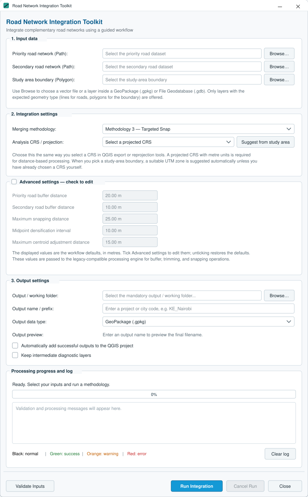

Get started
Install the toolkit in QGIS
The simplest installation route is through the QGIS Plugin Manager. The plugin runs using the Python, PyQGIS, Qt and GDAL components supplied by QGIS.
Install through Plugin Manager
- Open QGIS.
- Go to Plugins → Manage and Install Plugins…
- Search for Road Network Integration Toolkit.
- Select the plugin and choose Install Plugin.
- Open it from the Plugins menu or its toolbar icon.
Install from ZIP
Download the package from the official QGIS plugin listing. In Plugin Manager, choose Install from ZIP and select the downloaded package.
Source installation
Place the plugin files in a folder named road_network_integration_toolkit under the active QGIS profile's python/plugins directory. Restart QGIS and enable the plugin.
System compatibility
The plugin uses QGIS APIs and does not require separately installed GeoPandas or Shapely packages.
Recommended output format
GeoPackage (.gpkg) is recommended because it preserves full field names and supports multiple layers and intermediate diagnostics.
First run
Quick start checklist
Prepare your inputs and follow these steps for an initial integration.
Select inputs
Priority roads, secondary roads and polygon study boundary.
Choose method
Direct Merge, Clip + Snap or Targeted Snap.
Set CRS
Choose an appropriate projected CRS for distance operations.
Review settings
Start with defaults, then tune distances if required.
Validate and run
Check inputs, run integration and inspect the log.
